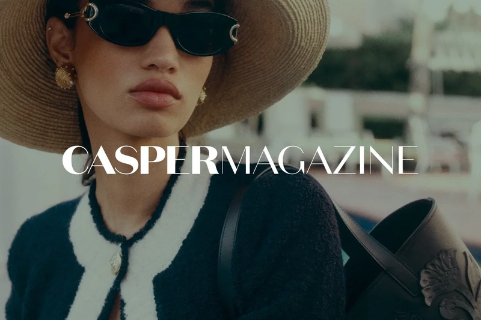
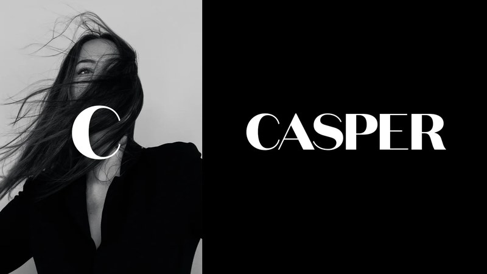
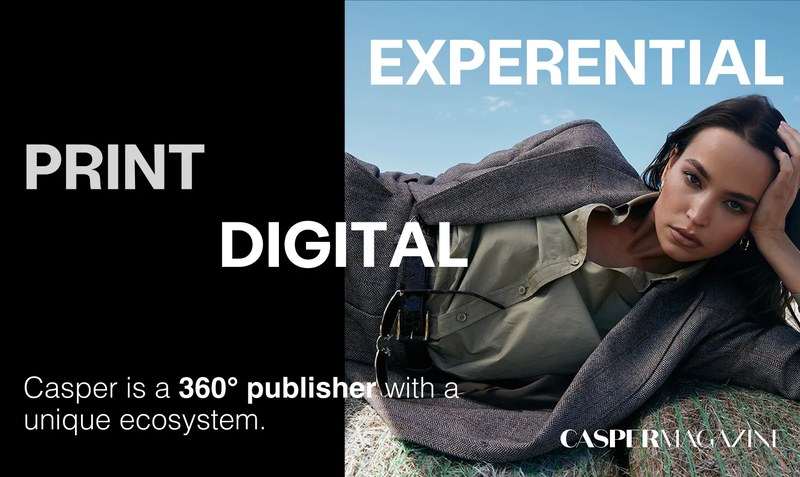
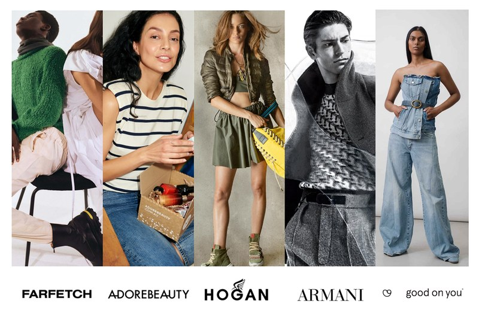
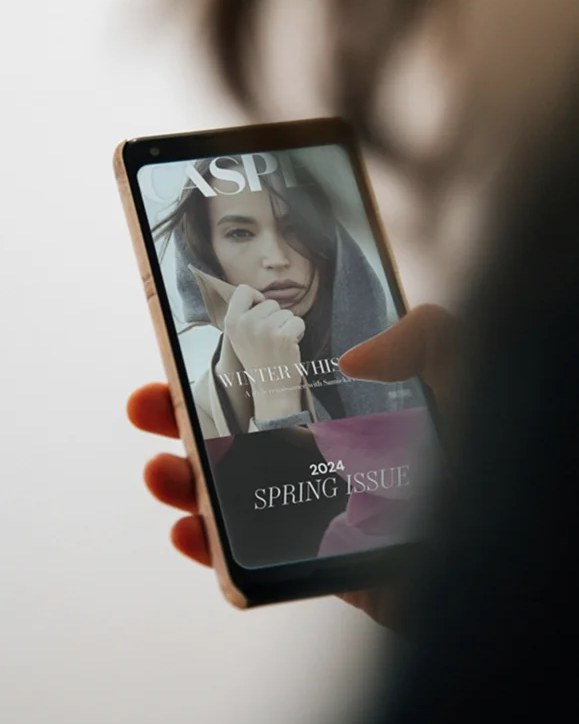

Casper Magazine
B2B Go-to-Market Strategy | Commercial Product Development | Brand Partnerships & Digital Publishing
Building the commercial foundations of an independent digital publication

Business context
Casper Magazine is an independent Melbourne publication covering fashion, beauty, wellness, design and contemporary culture.
Founded by Maria Ugrinovski, its Editor-in-Chief, the publication had built an editorial identity and audience through its blog, Instagram and digital content.
The next stage was to develop Casper into a more established digital publishing business, supported by a clear advertising proposition, expanded digital services and commercial partnerships.
The challenge
Casper had developed its editorial voice and audience, but becoming a commercially focused digital publication required a more structured business offering.
Prospective advertisers needed to understand the publication's audience, the advertising opportunities available and the value of a commercial partnership.
The challenge extended beyond advertising space. Casper needed a defined offering covering digital placements, sponsored content, editorial collaborations and brand partnerships.
That meant market research, commercial product development, a coherent go-to-market approach and professional sales materials, all while respecting the publication's editorial identity.
Our approach
Antimony Studio worked across commercial strategy, brand development, digital publishing and marketing communications.
Competitor research & commercial positioning
The programme began with research into comparable publications, their advertising products and the way they structured commercial partnerships.
The research identified opportunities to establish a more defined and differentiated advertising proposition.
Go-to-market & product development
A tiered advertising and partnership offering was developed, combining digital advertising, editorial services, sponsored content and brand collaborations.
The intention was a structured commercial proposition that Casper could present to businesses with different objectives and budgets.
Media kit development
The commercial offering was translated into a redesigned media kit, presenting the publication's identity, audience, advertising services and partnership opportunities in a professional, commercially focused format.
Brand, website & editorial development
The wider engagement included brand positioning, visual identity, website development and editorial communications to support the publication's evolution.
Business development & partnerships
The programme also supported the identification of prospective advertisers, commercial opportunities and suitable brand collaborations.
Operational systems
New project management systems were introduced to improve workflow, coordination and the organisation of ongoing activities.

My contribution
As Account Director, I worked directly with Casper's founder and Editor-in-Chief, Maria Ugrinovski.
I conducted the competitor and market research, looking at how comparable digital publications packaged their advertising services and commercial partnerships.
From that research, I developed the foundations of Casper's tiered advertising and content offering, bringing digital placements, editorial opportunities and brand collaborations together into a structured commercial proposition.
I prepared and presented the offering to Maria, working with Antimony's Chief Strategist, who helped refine and approve the strategic direction.
I also led the redevelopment of Casper's media kit, coordinating the commercial content, positioning and creative delivery needed to make it an effective business development tool.
Beyond the media kit, I was actively involved in identifying advertising opportunities, developing prospective brand relationships and helping progress business-to-business partnerships.
I introduced project management systems that improved workflow and coordination across the engagement.


Services & deliverables
- Competitor and market research
- B2B go-to-market development
- Commercial positioning and product strategy
- Tiered advertising package development
- Digital and editorial service offering
- Advertising and sponsorship propositions
- Media kit strategy, content and design
- Advertiser and brand partner research
- Business development and partnership support
- Brand identity and digital publishing
- Website design and development
- Content and editorial communications
- Project management systems and workflow
- Senior client leadership and multidisciplinary delivery

Outcome
The engagement helped Casper strengthen the commercial foundations it needed to operate as an independent digital publication.
The new advertising product structure and media kit gave Casper a clearer, more professional way to communicate its audience, services and partnership opportunities.
The programme supported new advertising avenues, brand collaborations and successful business-to-business partnerships.
- 92% more website sessions
- 140% more member sign-ups
- 14 brand partner meetings
Antimony Studio reported a 92% increase in website sessions and a 75% increase in organic search traffic following the redesign, with member sign-ups up 140%. The advertiser pitch deck led to 14 meetings with prospective brand partners.
Alongside the commercial work, improvements to brand presentation, digital experience and internal workflow gave the publication greater structure for its ongoing development.